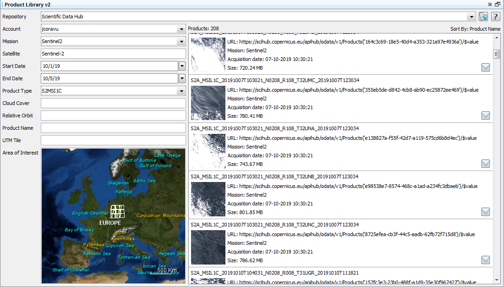
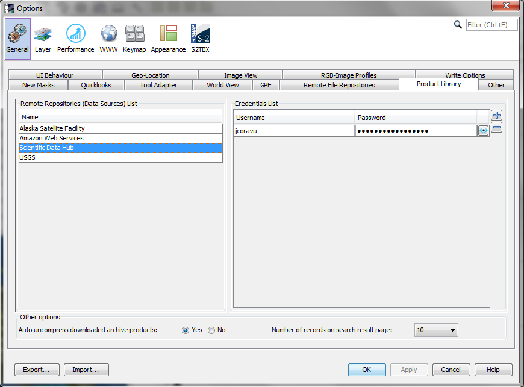

| Product Library Tool | |
The Product Library Tool allows the user to search for products on a certain repository using specific filters to retrieve the product list. Each repository has its own filters and some of them are mandatory.
The products may be searched in terms of mission, satellite, product type, date and time of acquisition. They may also be searched by graphically drawing an area of interest on the world map.
There are two repository types:
(i) remote repository
(ii) local repository
In order to access the products stored on a remote repository an authentication is required. In this case the user must define an account to that repository in the application. The remote products may be downloaded on a local folder. To download products press the mouse right button on the selected products and select the Download option. Then select the local folder used to save the products. After downloading a product on the local folder it can be opened in the application.
To add an account to a remote repository access the 'Tools -> Options' menu and in the dialog window select the 'Product Library' tab.
The selected local folder to download the remote product represent a local repository. The user may add/remove a local repository, refresh the product list from the local folders according to the saved metadata from the database of the downloaded products. By means of the popup menu displayed using mouse right button clicked on a selected product(s) the user may:
(i) open products in the application
(ii) delete products from the database
(iii) process the products in the Batch Processing dialog
(iiii) show the local folder containg that product